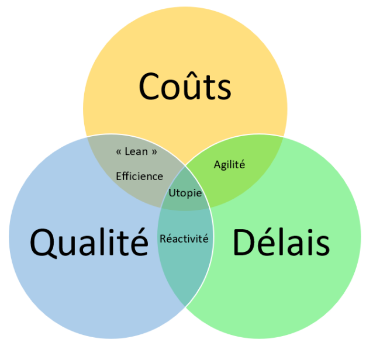

Voir vidéo
Par définition, la gestion de projet est l'ensemble des moyens mis en œuvre pour suivre et aboutir à la réussite d'un projet. Afin d'en saisir l'essence, il est nécessaire de pouvoir définir les tenants et aboutissants de ce qu'est un projet. Pour cela, nous allons tout d'abord préciser cette notion avant d'en identifier les acteurs, puis les contraintes, et enfin nous décrirons les critères permettant de le considérer comme terminé.
Un projet est un ensemble d'activités temporaires initiées dans le but de fournir un produit, un service ou un résultat unique.
Les aspects temporaires et uniques sont importants, car cela distingue les projets des « opérations ». Les opérations sont un ensemble de processus continus (donc sans réel début ni fin), répétitifs et ayant des ressources attribuées.
Les projets peuvent bien sûr comporter un aspect répétitif. Cependant, le résultat reste unique : donc l'approche et sa gestion sont elles aussi uniques.
Ils mobilisent des ressources durant leur exécution (humaines, matérielles, financières, etc.) et ont un périmètre qui impacte l'organisation au sein de laquelle ils sont exécutés.
Le changement est la raison d'être d'un projet. Ce changement est nécessaire pour répondre à des besoins de création de valeur pour l'organisation (valeur qui peut être tangible ou intangible).
Les résultats attendus du projet sont appelés « livrables ».
Un projet peut consister à créer un bâtiment. Même si ce bâtiment est similaire à d'autres bâtiments, il peut être fait par des équipes différentes, avec des variations différentes, sur un terrain différent, avec des matériaux différents, etc.
Parmi les livrables, on pourrait trouver le bâtiment en lui-même, mais aussi les plans, les comptes-rendus de réunion, etc. Ces livrables répondent à un besoin et vont créer de la valeur (nous pouvons imaginer que le bâtiment va être loué ou vendu, par exemple).
Une opération, quant à elle, peut consister à faire une demande pour la création d'une ligne téléphonique : le processus est connu, maîtrisé, prédictible et standard. Il suffit de suivre les instructions déjà établies pour arriver à un résultat qui n'est pas unique.
L'initialisation d'un projet passe par l'identification de tous les acteurs qu'il concerne. Ceux-ci peuvent être regroupés dans les catégories suivantes :
La bonne prise en compte des parties prenantes est extrêmement importante, car celles-ci ont une influence sur la bonne atteinte des objectifs d'un projet.
Prenons un exemple : un projet de construction d'une route qui était bien avancé ; les plans étaient terminés, les prestataires étaient engagés, les autorisations signées.
Le premier jour où les travaux ont commencé, les riverains se sont plaints de n'avoir pas été consultés ni même informés, déposant une plainte qui aboutira à la mise en pause des travaux et à un report de plusieurs mois.
Les coûts de ce report et de la gestion de cette crise ont bien évidemment conduit le projet à la non-atteinte de deux objectifs : le respect du budget et celui du planning initial.
La gestion de projet n'avait malheureusement pas identifié et donc pris en compte ces parties prenantes !
Une contrainte est un facteur qui limite la performance du projet. Il y en a généralement trois, mais on peut en définir d'autres si nécessaire :
Les contraintes d'un projet sont comme une couverture non-extensible : on peut privilégier certaines contraintes, mais on ne peut pas les prendre en compte toutes à 100 %.
Il est important que le chef de projet fasse prendre conscience de cette équation aux différents acteurs du projet. Le sponsor doit faire un choix sur la priorité des contraintes du projet en définissant un niveau réaliste à atteindre pour chacune d'entre elles. Le chef de projet doit s'assurer du respect de cette décision.
La prise en compte des contraintes et leur impact sur le projet peuvent être représentés par la modélisation suivante :
Un projet de construction de voiture impose de la mettre sur le marché le plus rapidement possible, en respectant une qualité minimum afin de permettre l'homologation de celle-ci sur le marché européen uniquement.
Voici un exemple de contraintes fortes sur les délais, moyennes sur la qualité et les fonctionnalités (homologation visée uniquement sur un marché) et faibles sur les coûts.
Il serait impossible de faire ce projet avec un coût faible, une qualité irréprochable et des délais très courts : chacune de ces contraintes impacte négativement les autres.
La nature temporaire d'un projet fait qu'il a un début et une fin. La fin d'un projet est déclenchée par un ou plusieurs des éléments suivants :